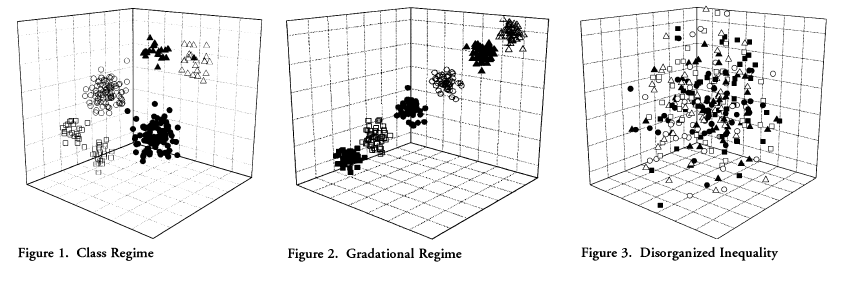
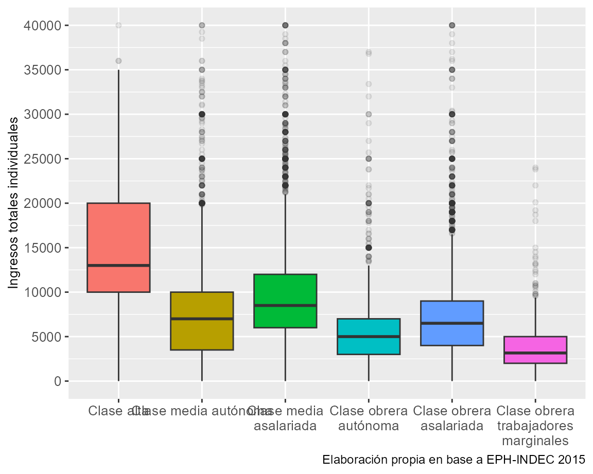

Capítulo 6 La clase como variable independiente
Este capítulo tiene como propósito presentar a las clases sociales como uno de los factores estructuradores de la desigualdad social. Una vez ya revisadas las teorías que explican el modo en el que la sociedades pueden dividirse en clases, y a la vez, ser operacionalizadas para su estudio empírico a través de fuentes de datos, por un lado indagamos acerca del rol que presenta el sistema de clases en la configuración de diversos tipos de desigualdades y resultados atribuibles a individuos y hogares. Para ello exploraremos algunas teorías que han intentado explicar el vínculo entre dichos aspectos. Por el otro, indagaremos algunas de las dimensiones más relevadas (ingresos, hábitat, demografía) y presentaremos diversas formas de explorar la relación entre las variables.
Las siguientes preguntas guiarán al capítulo:
- ¿Sobre qué aspectos la estructura de clases resulta un factor explicativo?
- ¿Qué elementos teóricos permiten explicar el papel de la estructura de clases como factor condicionante de la clase social?
- ¿Cuáles son las principales dimensiones relevadas por los investigadores en el análisis de clases?
- ¿Qué técnicas exploratorias podemos utilizar para presentar los resultados?
- ¿Qué rol juegan otros factores explicativos de la desigualdad y cómo pueden ser estudiados en conjunto con las clases sociales?
Al completar el capítulo se espera que los lectores puedan:
- Conocer los principales enfoque teóricos que postulan a las clases sociales como un aspecto clave para la comprensión de otras desigualdades sociales.
- Revisar las principales dimensiones de la realidad que fueron estudiadas desde un enfoque de clases sociales.
- Presentar los principales abordajes exploratorios y descriptivos que pueden realizarse teniendo a la clase social como variable independiente.
- Introducir el enfoque multivariable en el estudio de la desigualdad social a partir del análisis de clase.
Para una mayor comprensión del capítulo recomendamos la lectura de los siguientes textos:
Dubet, F. (2015). Clases sociales y descripción de la sociedad. Revista Ensambles, (3).
Torrado, S. (1995). Vivir apurado para morirse joven: Reflexiones sobre la transferencia intergeneracional de la pobreza. Revista Sociedad, 7.
Maceira, V. (2018). Clases y diferenciación social. En J. I. Piovani y A. Salvia (Eds.), La Argentina en el siglo XXI. Cómo somos, vivimos y convivimos en una sociedad desigual. Encuesta Nacional sobre la Estructura Social. Buenos Aires: Siglo Veintiuno Editores. (Revisa varios aspectos: autopercepción de clase, condiciones laborales, movilidad social, demografía del hogar)
Pla, J., Rodríguez de la Fuente, J., y Sacco, N. (2018). Clases sociales y condiciones de vida en el Gran Buenos Aires (2003-2013). Revista Colombiana de Sociología, 41(2), 189-231. (Análisis de ingresos condiciones laborales y habitacionales)
Sacco, N., y Borges, G. (2018). ¿Converge la fecundidad en Brasil y Argentina? Un enfoque desde las desigualdades. Revista Brasileira de Estudos de População, 35(1), 1-29. (Análisis demográfico)
Solís, P., Chávez Molina, E., y Cobos, D. (2019). Class Structure, Labor Market Heterogeneity, and Living Conditions in Latin America. Latin American Research Review, 54(4). (Análisis comparativo en Latinoamérica sobre ingresos y condiciones laborales)
Elbert, R. (2020). Posición de clase objetiva y auto-identificación de clase. En P. Dalle, R. Sautu, P. Boniolo, y R. Elbert, El análisis de clases sociales. Pensando la movilidad social, la residencia, los lazos sociales, la identidad y la agencia. Buenos Aires: CLACSO - IIGG. (Autopercepción de clase)
6.1 La estructura de clases ¿el huevo o la gallina?
Para entender a qué nos referimos al conceptualizar a la clase social como variable independiente podemos pensar en el típico ejemplo de qué viene primero, si el huevo o la gallina. En este caso, la estructura de clases tiene potencial tanto de explicación como de fenómeno a ser explicado. En esta característica radican su versatilidad y complejidad. Lo cierto es que en esta sección, abordaremos de qué manera puede influir la clase en diversos aspectos de la desigualdad social, inherente a las sociedades actuales.
Dicho en otros términos, si tomamos un modelo simple, podemos representar a la variable independiente como X y a la variable dependiente como Y, veremos que:
X —> Y
Esta simplificación de la realidad nos brinda un modo sencillo de analizar la forma en que se relacionan las variables, dado que es la clase aquella que influye o afecta (pero nunca determina) a la desigualdad social. Asimismo, nuestra Y podría representar a múltiples factores o fenómenos que varían según el comportamiento de X. Esto es, por ejemplo, el modo en que la estructura de clases tiene efectos sobre la distribución de los ingresos de los individuos y de los hogares, o bien en el hábitat, los fenómenos demográficos, las condiciones laborales, el consumo, el capital cultural, los factores psico-sociales, entre otros. En la literatura, estos resultados ligados al posicionamiento de clase, fueron concebidos bajo diferentes ideas: “oportunidades de vida”, “condiciones de vida”, “nivel de vida”, “bienestar”, “riqueza”, “recursos”, “activos”, “capitales”, etc.
Con la finalidad de presentar estas numerosas relaciones que la variable clase posee en los fenómenos aquí presentados, tendremos en cuanta una a una las diferentes perspectivas que nos permiten comprender cada una de ellas.
6.1.1 El enfoque relacional-weberiano
La literatura destaca la relación existente entre las clases y las oportunidades de vida. Dicho de otro modo, existe una relación entre la estructura en la que se ubican los individuos y la posibilidad de lograr o alcanzar ciertas oportunidades de vida. Entonces, como señala Benza (2014), esto no significa que las clases determinen necesariamente, o generen directamente tales o cuáles “chances” de vida de las personas, sino más bien, contribuyen a la probabilidad de que se den. En pocas palabras, pertenecer a una clase hace que sea mayormente posible el hecho de lograr determinadas oportunidades de vida, que en el caso de pertenecer a otra posición de la estructura social serían diferentes.
Ya presentadas las diferencias que se ven afectadas por la pertenencia a una clase u otra, es decir, las diferencias entre clases, ahora nos centramos en ver qué sucede dentro de las clases, o sea, al interior de un grupo de la estructura social. Para ello, recordamos el argumento de Breen (2005, p. 3) acerca de la variabilidad en las oportunidades de vida que existen entre los miembros de una misma clase. Estas se deben a que las clases dependen de múltiples factores, lo que hace que cierta posición de clase no se corresponda totalmente —como condición sine qua non— con determinado conjunto de oportunidades de vida. La relación es más bien explicada como a consiguiente: las oportunidades de vida no se estructuran únicamente por la estructura de clases. También intervienen otros factores relevantes como la edad, el género, la etnia, el lugar de nacimiento y/o el nivel educativo.
¿Cómo funcionan, entonces, las oportunidades de vida? Estas se componen de una amplia paleta de aspectos tales como los ingresos, la capacidad de ahorro, la seguridad económica, la estabilidad económica, las expectativas económicas, la salud, entre otros (Chan & Goldthorpe, 2007; J. H. Goldthorpe & McKnight, 2006). De este modo, explorar la relación entre la estructura de clases y las oportunidades de vida, implica tomar como punto de partida a las clases para analizar cómo afectan a los fenómenos de tinte cuantitativo (por ejemplo: la distribución del ingreso), y aquellos de tipo cualitativo (por ejemplo: expectativas económicas). Siguiendo esta línea de acercamiento relacional, vemos que para Goldthorpe las clases sociales deben pensarse no en términos jerárquicos (respecto a los resultados y oportunidades a los cuales se asocian) sino en términos de posiciones más o menos ventajosas.
6.1.2 Estructural funcionalismo
Hablar del estructural funcionalismo implica “movernos” en el nivel de abstracción del análisis. Si el enfoque weberiano nos permite ahondar en los aspectos macro estructurales, el funcionalismo hace foco en el nivel intermedio o meso de análisis sociológico. Desde esta perspectiva, partiendo de criterios evaluatorios, el sistema social jerarquiza a las posiciones en función del mérito y la especificidad de la ocupación detentada y también establece el “paquete de recompensas” (Cachón Rodríguez, 1989; Parsons, 1954). Esto es, la correspondencia ordenada e institucionalizada de la relación estratificación-recompensas.
Como consecuencia, lejos de referirse a la estratificación social como un factor estructurador de las desigualdades, las recompensas deben pesarse como una consecuencia del proceso de igualdad de oportunidades, es decir, una “desigualdad institucionalizada” de resultados existentes.
6.1.3 Un enfoque intermedio
En un camino intermedio de estos dos enfoques se encuentra la propuesta de Grusky (2008). El autor plantea que existen tres componentes clave que definen a un sistema de estratificación: 1) los procesos institucionales que definen qué tipos de bienes deben ser valorados y deseables; 2) las reglas de asignación que distribuyen dichos bienes según ocupaciones en la división del trabajo y 3) los procesos de movilidad que ligan a los individuos con las ocupaciones y brindan un control desigual sobre los recursos valorados (Grusky, 2008, p. 5), ilustrado en la 6.1.
Dentro de los activos que se encuentran desigualmente distribuidos en la sociedad, podemos nombrar a los: económicos, de poder, culturales, religiosos, sociales, honoríficos, civiles, humanos y físicos.
Activos |
Ejemplos |
||
|---|---|---|---|
Tipo de activos |
Ejemplos |
Aventajados |
Desaventajados |
Económico |
Riqueza |
Billonarios |
Trabajador quebrado |
Ingresos |
Profesionales |
Obrero |
|
Propiedad |
Capitalistas |
Empleado |
|
Poder |
Poder político |
Primer ministro |
Persona sin derechos |
Autoridad en el trabajo |
Manager |
Trabajador subordinado |
|
Autoridad en el hogar |
Jefe/a de hogar |
Niño |
|
Cultural |
Conocimiento |
Intelectuales |
Persona sin educación |
Cultura digital |
Residentes de Sillicon Valley |
Residente de otros lugares |
|
Buenas maneras |
Aristocracia |
Plebeyos |
|
Social |
Club sociales |
Miembro de un club de campo |
No miembro |
Asociaciones profesionales |
Miembro de sindicato |
No miembro |
|
Redes informales |
Washington A-List |
Desconocido |
|
Honorífico |
Ocupacional |
Juez |
Recolector de residuos |
Religioso |
Santo |
Excomulgado |
|
Basado en el mérito |
Premio Nobel |
No ganador |
|
Civil |
Derecho al trabajo |
Ciudadano |
Migrante ilegal |
Debido proceso |
Ciudadano |
Supuesto terrorista |
|
Voto |
Ciudadano |
Delincuente |
|
Humano |
Formación laboral |
Trabajador expermientado |
Trabajador inexperto |
Formación escolar |
Graduado |
Desertor escolar |
|
Formación vocacional |
Graduado |
Trabajador no calificado |
|
Físico |
Mortalidad |
Persona con larga vida |
Muerto prematuro |
Enfermedad física |
Persona saludable |
Persona con SIDA, asma |
|
Salud mental |
Persona saludable |
Deprimido, alienado |
|
Fuente: Grusky (2008) | |||
6.1.4 Una cuarta mirada
Existe otra alternativa para aproximarnos a la relación entre clases y distintos fenómenos sociales. Esta perspectiva focaliza en el riesgo como característica central, el cual se distribuye de manera desigual según la clase social (Esping-Andersen, 2000). Dicho de modo simple, el factor clave para esta tesis es el riesgo social, que cambia de un nivel individual al social una vez que a) hay consecuencias colectivas sobre el destino de los individuos; b) la sociedad lo reconoce como necesidades de consideración pública y c) la sociedad se complejiza. El punto es que el riesgo social no está dispuesto de la misma manera en toda la sociedad, sino como señalamos anteriormente: de forma desigual entre las clases (en la estructura social) y los cursos de vida (de los individuos).
Entonces, ¿cómo logra lidiar la sociedad con el riesgo? Según este autor existen tres fuentes:
- La familia: es la solución tradicional
- El mercado: es la solución liberal
- El Estado de Bienestar: es la solución divergente, que puede identificarse con la democracia social.
A diferencia de las miradas liberales, este enfoque entiende a las carencias y los riesgos, no como atributos de las personas, sino como probabilidades de grupos sociales: como aspectos colectivos. Este enfoque agrega un adicional a la propuesta weberiana, que radica en el papel del Estado a la hora de gestionar dichos riesgos. El concepto “desmercantilización” es clave para entender la cuestión, ya que el concepto aspira a captar el grado en el que el Estado puede garantizar determinados bienes y servicios debilitando su nexo monetario, es decir, independizando su obtención de acuerdo al lugar ocupado en el mercado. En función de la intensidad con la cual los riesgos de clase fueron atendidos, según Esping-Andersen, tres tipos ideales de Estado tuvieron lugar en las sociedades occidentales: un formato liberal, uno corporativista y uno universalista.
La solución del autor, en breve, apunta a otorgar un mayor peso de responsabilidad en el estado para las soluciones públicas de los problemas colectivos, en detrimento del papel que el mercado o la familia, en tanto instituciones, puedan tener.
6.1.5 Epílogo: una sociedad sin clases
Finalmente, existen una serie de enfoques y teorías que señalan el debilitamiento y la descomposición del concepto de clase social como elemento central para comprender el sistema de desigualdades (Dubet, 2015). Según estos enfoques, las transformaciones en el capitalismo hacia finales de siglo XX, que algunos autores han englobado bajo la idea de “capitalismo de acumulación flexible”, “capitalismo tardío” o “post-industrialismo”, entre otras etiquetas, encontraron cierta compatibilidad con un proceso de cambio en el régimen de significación cultural que se daba a la par: el pasaje del modernismo al posmodernismo (Lash, 2007). El paradigma productivista que había marcado a fuego las relaciones sociales, las instituciones y los modos de acción social y política, sobre todo en los treinta gloriosos años del Estado de Bienestar, dejaría lugar a un nuevo régimen en el cual el consumo y la consecuente estilización de la vida cobran una mayor preeminencia, erigiéndose como nuevos cimientos del lazo social, las interacciones y la acción comunitaria.
Es partir de este desfasaje entre las mutaciones que atraviesa la sociedad en su conjunto y las categorías empleadas para analizarlas, que algunos autores plantearon la pérdida de la potencialidad explicativa del concepto de clase social y sus derivados. En una posición casi límite, Touraine (2005) indicaba que categorías tales como clase social y riqueza o estratificación y movilidad social, perdieron su poder explicativo debido a un cambio de paradigma en la interpretación de la vida personal y colectiva que ya no remite a una explicación en términos sociales. En esta línea, Beck (1998) planteaba que la modernidad había producido una fractura en la cual la clásica sociedad industrial se disuelve transformando a las desigualdades sociales en desigualdades personales. De este modo, las categorías centrales del análisis de clase, herederas de la tradición marxista y weberiana, que funcionaban como “diques de contención” de los agrupamientos sociales, se vuelven estériles para comprender los procesos de individuación y diversificación en los estilos de vida que caracterizan a la nueva dinámica social.
A grandes rasgos, los distintos enfoques que hemos reseñado en esta sección pueden ilustrarse en las siguientes gráficas:
Gráfico 6.1: Tipos de representación de la estructura social (Grusky, 2008): 1) Régimen de clase, 2) Régimen gradacional, 3) Desigualdad desorganizada
Mientras que el primero de los gráficos hace referencia a los enfoque clásicos relacionales de clase, en donde las distintas posiciones no pueden representarse en términos de “más altas” o “más bajas”, sino de acuerdo a las múltiples relaciones que se dan entre los grupos, el segundo gráfico hace referencia al enfoque estructura funcionalista, en el que las posiciones son pensadas en términos gradacionales y la distribución respecto a las oportunidades de vida se da en forma ordenada. Finalmente, en el tercer gráfico, se muestra la representación del enfoque que señala el debilitamiento de la clase como factor explicativo de las desigualdades, ante la aparición de múltiples aspectos y factores de mayor relevancia. En este sentido, la desigualdad se torna, en parte, irrepresentable y desorganizada a partir de características de raigambre más individual.
6.2 Explorando los datos por clase social
Al estudiar las desigualdades desde una perspectiva de clases, una primera aproximación al problema puede comenzar explorando el modo en que los distintos indicadores, que consideramos como variables dependientes, se distribuyen entre las distintas posiciones. En este sentido, las medidas de tendencia central, así como las de dispersión, pueden ser buenas herramientas en esta etapa.
Tomando como variable dependiente los ingresos totales individuales (P47T), calcularemos el promedio por clase social. Para ello utilizaremos algunas funciones del paquete dplyr y de R base como weighted.mean. Tomaremos como punto de partida, los datos que hemos trabajado en los capítulos anteriores de la EPH del segundo trimestre de 2015.
eph_ind_215 %>%
filter(!is.na(clase6_factor)) %>%
group_by(clase6_factor) %>%
summarise(media = weighted.mean(P47T, w = PONDERA))# A tibble: 6 × 2
clase6_factor media
<fct> <dbl>
1 Clase alta 15723.
2 Clase media autónoma 8527.
3 Clase media asalariada 9738.
4 Clase obrera autónoma 5509.
5 Clase obrera asalariada 7151.
6 Clase obrera trabajadores marginales 3792.Como puede observarse, las posiciones de clase son explicativas de la desigualdad de ingresos. A mayor posición de clase, mayores ingresos percibidos. A su vez, existen fronteras, en términos de ingresos, entre la clase media y obrera, así como entre los estratos autónomos y asalariados. Sin embargo, la media es una medida que no da una caracterización completa respecto a la distribución de los valores. Para ello comúnmente se utilizan las medidas de posición y de dispersión como forma de conocer cuán homogéneas o heterogéneas son las distribuciones de los datos, en este caso, de los ingresos. El diagramas de caja (o en inglés boxplot), nos permite a partir de una salida gráfica, dar cuenta de una serie de estas medidas. Con ayuda del paquete ggplot2 y la función geom_boxplot presentamos el siguiente gráfico. Para facilitar la visualización, seleccionamos únicamente los casos con ingresos hasta $40.000.
eph_ind_215 %>%
filter(!is.na(clase6_factor), P47T <= 40000) %>%
ggplot(aes(x=clase6_factor, y=P47T, fill=clase6_factor, weight = PONDERA)) +
geom_boxplot(outlier.alpha = 0.1, show.legend = FALSE)+
labs(y = "Ingresos totales individuales",
caption = "Elaboración propia en base a EPH-INDEC 2015") +
theme(plot.caption = element_text(size = 9),
axis.title.x = element_blank(),
axis.title.y = element_text(size = 10),
axis.text.x = element_text(size = 10),
axis.text.y = element_text(size = 10)) +
scale_x_discrete(labels = function(x) str_wrap(x, width = 20)) +
scale_y_continuous(breaks=seq(0, 50000, 5000))Gráfico 6.2: Ingresos totales individuales por clase social
Varios son los elementos del gráfico que debemos destacar. En primer lugar, las cajas dan cuenta del rango inter-cuartil (1ro y 3ro), mientras que las lineas representan a las medianas de ingresos, es decir, el valor que parte a la distribución por la mitad. De esta forma, los resultados se muestran similares a los arribados en la tabla anterior, aunque las clases medias y la clase alta muestran cierta heterogeneidad en los ingresos percibidos. Finalmente, los límites de las lineas verticales representan los valores máximos y mínimos, mientras que los puntos identifican a los casos atípicos.
6.3 Aproximación al análisis multidimensional
Por último en este capítulo revisaremos un breve ejemplo de análisis multidimensional. Este tipo de abordaje es el más completo para el estudio de las relaciones entre variables, ya que raramente la realidad social puede ser estudiada únicamente a partir de un análisis bivariado. La multicausalidad de los procesos sociales obliga a trabajar con abordajes que permitan captar la mayor cantidad de relaciones, manteniendo siempre la premisa de buscar explicaciones parsimoniosas.
En este sentido, existen distintas técnicas para abordar fenómenos multidimensionales, que dependerán de nuestros objetivos de investigación, tipos de variables, tipos de relaciones, fuente de datos, etc. Podemos nombrar las siguientes: tablas de contingencias múltiples, análisis de la varianza, regresión lineal múltiple, regresión logística, análisis de componentes principales, análisis de correspondencias múltiples, entre otros.
En este caso, retomaremos el ejemplo abordado en el apartado anterior: el vínculo entre la posición de clase y los ingresos. Pero, para completar el análisis, indagaremos también la influencia que tiene el género, la región de residencia y la edad en la captación de ingresos. Como puede verse, el análisis se torna mucho más completo agregando dichas variables.
Debido a que el tipo de variable dependiente con la que contamos (ingresos totales individuales) es cuantitativa, optaremos por emplear un análisis de regresión lineal múltiple. No entraremos en detalle sobre lo que implica dicha técnica, pero básicamente nos permitirá:
1. estimar la fuerza que cada variable presenta en la relación de dependencia,
2. realizar pronósticos sobre cómo se comportan las variables,
3. inferenciar al universo de estudio los resultados del modelo aplicado.
Como medida global, podremos obtener un coeficiente de bondad de ajuste que nos guiará sobre cuánto se aleja nuestro modelo respecto a la realidad social relevada por la encuesta.
En primer lugar para plantear un modelo de regresión, debemos configurar aquellas variables que son categóricas para que la función las pueda captar del modo correcto. Básicamente lo que necesitamos es transformar las variables cualitativas a factores. En este caso, solo debemos hacerlo con la variable REGION y CH04 (sexo). Le tendremos que señalar la etiqueta o valor que tomara cada categoría en la nueva variable factor. Asimismo, indicaremos mediante la función relevel que para la variable de clase queremos tomar como categoría de referencia a la Clase obrera - trabajadores marginales. A continuación explicaremos porque.
eph_ind_215$region_f <- factor(eph_ind_215$REGION, labels = c("GBA", "NOA", "NEA", "Cuyo", "Pampeana", "Patagónica"))
eph_ind_215$sexo_f <- factor(eph_ind_215$CH04, labels = c("Varón", "Mujer"))
eph_ind_215$clase6_factor <- relevel(eph_ind_215$clase6_factor, ref = "Clase obrera trabajadores marginales")Realizado estos ajustes, estamos en condiciones de aplicar la regresión lineal múltiple. Antes, guardaremos en un nuevo data frame la selección de casos con la que venimos trabajando. La función a utilizar será lm (Linear Models), en donde deberemos primero señalar la variable dependiente (P47T) y seguido del símbolo ~ pondremos todas las variables independientes. Al final indicaremos la base sobre la que estamos trabajando. Cada modelo debe ser guardado en un objeto y luego debe ser llamado mediante la función summary. Nuestro primer modelo solo medirá la influencia de la clase social sobre los ingresos.
eph_regresion <- eph_ind_215 %>%
filter(CH06 >= 20 & ESTADO == 1 & !is.na(clase6_factor))
regresion1 <- lm(P47T ~ clase6_factor, data = eph_regresion, weights = PONDERA)
summary(regresion1)
Call:
lm(formula = P47T ~ clase6_factor, data = eph_regresion, weights = PONDERA)
Weighted Residuals:
LABEL: MONTO DE INGRESO TOTAL INDIVIDUAL(sumatoria ingresos laborales y no laborales).
VALUES:
-548054, -58009, -17814, 29883, 3784597
Coefficients:
Estimate Std. Error t value Pr(>|t|)
(Intercept) 3848 145 26.51 <2e-16 ***
clase6_factorClase alta 12015 584 20.56 <2e-16 ***
clase6_factorClase media autónoma 4817 179 26.88 <2e-16 ***
clase6_factorClase media asalariada 6007 158 38.02 <2e-16 ***
clase6_factorClase obrera autónoma 1714 192 8.95 <2e-16 ***
clase6_factorClase obrera asalariada 3480 160 21.80 <2e-16 ***
---
Signif. codes: 0 '***' 0.001 '**' 0.01 '*' 0.05 '.' 0.1 ' ' 1
Residual standard error: 125000 on 23764 degrees of freedom
Multiple R-squared: 0.0921, Adjusted R-squared: 0.0919
F-statistic: 482 on 5 and 23764 DF, p-value: <2e-16Para simplificar el análisis vamos a prestarle atención a tres cuestiones. En primer lugar, la significatividad estadística, calculada a partir de los valores t y la última columna (estrellas), nos señalan que todas las categorías de la variable clase son significativas. Es decir, que podemos inferir los resultados al total del universo sobre el que se hizo nuestra muestra.
En segundo lugar, tendremos que observar cada uno de los coeficientes \(\beta\) (beta) de la columna estimate. Nos señalan en cuánto se incrementan los ingresos respecto a nuestra categoría de referencia. Recordemos que anteriormente configuramos para que nuestra categoría de referencia sea la clase obrera - trabajadores marginales. Esto implica a decir que las personas de clase alta ganan, en promedio estimado, $12.014 más que los trabajadores marginales o $6.007 en el caso de la clase media asalariada.
En tercer lugar, debemos prestar atención a la bondad de ajuste del modelo. Esta se mide a partir del R2 (coeficiente de determinación) y lo encontramos en la leyenda inferior de la tabla. Tomando el valor ajustado (Adjusted R-squared) y porcentualizándolo, podemos decir que la clase social explica un 9% de la distribución de los ingresos en la población. El restante 91% es lo que queda por indagar para saber que otras variables se encargan de explicarlo.
De esta forma, realizamos un segundo modelo (regresion2) en donde incorporamos a los factores edad, región y sexo.
regresion2 <- lm(P47T ~ clase6_factor + CH06 + region_f + sexo_f, data = eph_regresion,
weights = PONDERA)
summary(regresion2)
Call:
lm(formula = P47T ~ clase6_factor + CH06 + region_f + sexo_f,
data = eph_regresion, weights = PONDERA)
Weighted Residuals:
LABEL: MONTO DE INGRESO TOTAL INDIVIDUAL(sumatoria ingresos laborales y no laborales).
VALUES:
-567092, -51654, -13290, 29441, 3730405
Coefficients:
Estimate Std. Error t value Pr(>|t|)
(Intercept) 1824.69 202.88 8.99 < 2e-16 ***
clase6_factorClase alta 10933.10 556.07 19.66 < 2e-16 ***
clase6_factorClase media autónoma 3572.15 174.27 20.50 < 2e-16 ***
clase6_factorClase media asalariada 5610.99 152.77 36.73 < 2e-16 ***
clase6_factorClase obrera autónoma 100.75 189.47 0.53 0.595
clase6_factorClase obrera asalariada 2420.17 160.70 15.06 < 2e-16 ***
CH06 95.94 2.92 32.82 < 2e-16 ***
region_fNOA -1722.77 128.08 -13.45 < 2e-16 ***
region_fNEA -2033.19 179.94 -11.30 < 2e-16 ***
region_fCuyo -748.05 148.26 -5.05 4.6e-07 ***
region_fPampeana -228.72 90.34 -2.53 0.011 *
region_fPatagónica 3862.20 191.59 20.16 < 2e-16 ***
sexo_fMujer -2106.44 79.63 -26.45 < 2e-16 ***
---
Signif. codes: 0 '***' 0.001 '**' 0.01 '*' 0.05 '.' 0.1 ' ' 1
Residual standard error: 119000 on 23757 degrees of freedom
Multiple R-squared: 0.181, Adjusted R-squared: 0.181
F-statistic: 438 on 12 and 23757 DF, p-value: <2e-16Todas las categorías resultan significativas, salvo la clase obrera - autónoma. Los coeficientes de la variable clase se mantienen con la misma tendencia (“a mayor clase, mayor ingreso”), aunque sus efectos son un poco menores. La variable CH06 (edad) al ser cuantitativa es de fácil lectura: por cada año adicional de las personas, los ingresos se incrementan en $96. Respecto a la región, la categoría de referencia es el GBA, ya que no está presente en el cuadro. Todas las regiones deben compararse con esa. De este modo, las personas que viven en NOA, NEA, Cuyo o Pampeana, en promedio ganan menos que los que residen en GBA (ver signo negativo). Los únicos residentes que parecieran tener un ingreso superior que los habitantes del GBA, son los de la región patagónica, con un monto que los supera en $3.862. El último coeficiente compara los ingresos de las mujeres con los varones, ganando estás últimas, en promedio, $2.106 menos.
Finalmente, la bondad de ajuste mejora considerablemente, al presentarse un R2 de 18,06%. Aún queda varianza por ser explicada por otros factores, pero aquellos que hemos incorporado suman significativamente a la explicación de la desigualdad de ingresos.